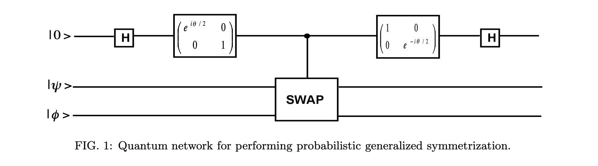
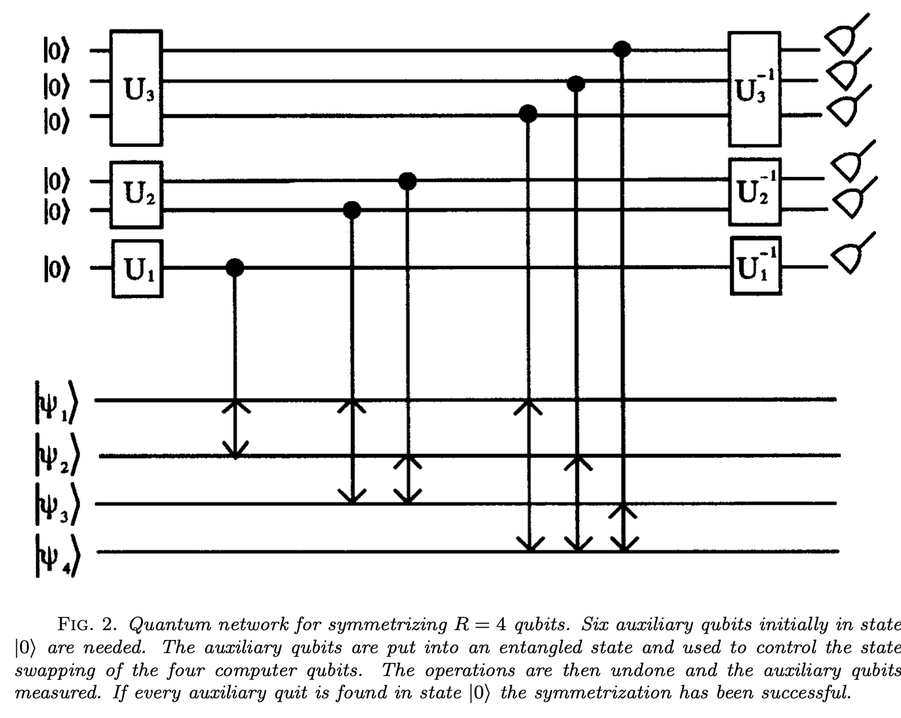

How to Prepare a Permutation Symmetric Multiqubit State on an Actual Quantum Computer¶
It turns out that one can represent a spin-\(j\) state equivalently as a permutation symmetric state of \(2j\) qubits. And this is good because given that our quantum computers (mostly) work with qubits, we need a way to represent everything we might care about in terms of them.
For example, if we have a spin-\(\frac{3}{2}\) state, we could express it in the usual \(\mid j, m \rangle\) basis as:
or in terms of symmeterized qubits:
In other words, there’s a one-to-one correspondence between the four \(\mid j, m \rangle\) basis states and the four symmetric basis states of three qubits. To wit: the states with \(3 \uparrow\), with \(2 \uparrow, 1 \downarrow\), with \(2 \downarrow, 1 \uparrow\), and with \(3 \downarrow\).
So we can easily form a linear map that takes us from the one representation to the other:
[1]:
from spheres import *
def symmetrize(pieces):
return sum([qt.tensor(*[pieces[i] for i in perm]) for perm in permutations(range(len(pieces)))]).unit()
def spin_sym_map(j):
if j == 0:
return qt.Qobj(1)
S = qt.Qobj(np.vstack([\
components(symmetrize(\
[qt.basis(2,0)]*int(2*j-i)+\
[qt.basis(2,1)]*i))\
for i in range(int(2*j+1))]).T)
S.dims =[[2]*int(2*j), [int(2*j+1)]]
return S
j = 3/2
d = int(2*j+1)
S = spin_sym_map(j)
spin = qt.rand_ket(d)
sym = S*spin
print("spin state:\n%s" % spin)
print("\npermutation symmetric qubits:\n%s" % sym)
I = S.dag()*S
print("\ntransformation an isometry?: %s" % (I == qt.identity(I.shape[0])))
spin state:
Quantum object: dims = [[4], [1]], shape = (4, 1), type = ket
Qobj data =
[[ 0.2680114 -0.33141963j]
[-0.06116115+0.26914443j]
[-0.54797038-0.31029464j]
[-0.58359679-0.07079553j]]
permutation symmetric qubits:
Quantum object: dims = [[2, 2, 2], [1]], shape = (8, 1), type = ket
Qobj data =
[[ 0.2680114 -0.33141963j]
[-0.0353114 +0.15539061j]
[-0.0353114 +0.15539061j]
[-0.31637084-0.17914869j]
[-0.0353114 +0.15539061j]
[-0.31637084-0.17914869j]
[-0.31637084-0.17914869j]
[-0.58359679-0.07079553j]]
transformation an isometry?: True
Another way of obtaining the same result is to find the roots of the Majorana polynomial of the spin, map the complex roots to the sphere, convert each resulting point into a qubit, and then symmeterize those separable qubits. Well, technically, if we do this, we lose the overall phase information of the original spin, but such is life.
Just for reference, again here’s the Majorana polynomial:
Where the \(a\)’s run through the components of the spin. Recall that if we have an \(d\) dimensional spin vector, but end up with a less than \(d\) degree polynomial, we add a root at infinity for each missing degree. Having obtained the roots, we stereographically project them to the sphere to get \((x, y, z)\) points, which we enjoy poetically calling “stars.”
The connection to permutation symmetry is that the roots are contained “unordered” in the polynomial!
Below we take a spin, finds its stars, convert them into qubits, symmeterize the qubits, then use the inverse of the transformation above to get back the spin state, and find the stars again. We see we recover the original stars exactly. So we get the right result up to phase. (Note we could have converted the complex roots directly to qubits, as we’ve seen, insofar as each complex root is to be the ratio between the two components of the qubit.)
[4]:
stars = spin_xyz(spin)
qubits = [qt.Qobj(xyz_spinor(star)) for star in stars]
sym2 = symmetrize(qubits)
spin2 = S.dag()*sym2
stars2 = spin_xyz(spin2)
print("initial stars:\n%s\n" % "\n".join([str(star) for star in stars]))
print("final stars:\n%s\n" % "\n".join([str(star) for star in stars2]))
initial stars:
[-0.74108075 -0.2676052 -0.61578144]
[ 0.32802509 0.85798535 -0.39529822]
[ 0.63479369 -0.38107314 0.67217574]
final stars:
[-0.74108075 -0.2676052 -0.61578144]
[ 0.32802509 0.85798535 -0.39529822]
[ 0.63479369 -0.38107314 0.67217574]
Another way of saying this is that if we have a state of \(2j\) separable qubits, each with an \((x, y, z)\) point representing its expected rotation axis, if we permute the qubits in all possible orders and add up all these permuted states, then the resulting state is naturally permutation symmetric, but also perhaps remarkably preserves the \((x, y, z)\) points of each of the qubits. Each point is now encoded not individually in the separable qubits, but instead holistically in the state of the entangled whole. If we transform from the symmeterized qubits to a spin-\(j\) state and find the roots of the Majorana polynomial, these complex roots, stereographically projected to the sphere, gives us back our original \((x, y, z)\) points. Of course, we have thrown out some information: namely, the phases of the individual qubits we symmeterized.
That’s all well and good, but a moment’s reflection will convince you that the operation of symmeterizing a bunch of qubits is not a unitary operation. After all, I need to make a separate copy of the qubits, one for each possible permutation, and then add them all up. This of course would violate no-cloning.
So you might wonder: Suppose I have \(2j\) separable qubits loaded into my quantum computer, and I want to prepare the permutation symmetric state corresponding to them. How do I do it?! Clearly, there can be no deterministic quantum operation that will do the trick.
Well, in this game, what one can’t do deterministically, one can often do probablistically. And that turns out to be the case here.
Consider the following circuit:
The heart of this circuit is the “controlled swap” or Fredkin gate. This is a three qubit gate: if the first qubit is \(\uparrow\), it leaves the second two alone; but if the first qubit is \(\downarrow\), it swaps/permutes the second two.
Its matrix representation is:
Which is easily obtained insofar as its just a \(4 \times 4\) identity block concatenated with the usual swap gate:
By the way, that’s a general rule for constructing controlled gates: just take the gate you want to be controlled by the first qubit, and concatenate it with an identity matrix of the same dimensionality.
So we have our two qubits we want to symmetrize, and the control qubit, with starts in the \(\mid \uparrow \rangle\) state. We apply a Hadamard gate to the control, which takes it to an even superposition \(\frac{1}{\sqrt{2}}(\mid \uparrow \rangle + \mid \downarrow \rangle\). So then when we apply the Fredkin, the two qubits to be symmetrized end up in a superposition of being swapped and not being swapped, relative to the control. We then apply a Hadamard again to the control, which by the way, is its own inverse (\(H = H^{\dagger}\)), to undo that original rotation, while leaving it entangled with the two qubits.
We then measure the control qubit: if we get \(\uparrow\), then our two qubits \(\mid \psi \rangle\) and \(\mid \phi \rangle\) end up in the symmetrized state \(\frac{1}{\sqrt{2}}(\mid \psi \rangle\mid \phi \rangle + \mid \phi \rangle\mid \psi \rangle)\). On the other hand, we get \(\downarrow\), then our two qubits ends up in the antisymmetrized state: \(\frac{1}{\sqrt{2}}(\mid \psi \rangle\mid \phi \rangle - \mid \phi \rangle\mid \psi \rangle)\).
So if we want the symmetrized state, we just keep doing the experiment over and over again until we get the answer we want!
In the diagram above, you may note there are also two phase rotation gates. We can use those if we want a state of the form \(\frac{1}{\sqrt{2}}(\mid \phi \rangle \mid \psi \rangle + e^{i\theta}\mid \psi \rangle \mid \phi \rangle\). If \(\theta=0\), we just get the identity matrix for both of them, and everything is as I said above.
[5]:
from scipy.linalg import block_diag
# construct our operators
H = (1/np.sqrt(2))*qt.Qobj(np.array([[1,1],\
[1,-1]]))
SWAP = qt.Qobj(np.array([[1,0,0,0],\
[0,0,1,0],\
[0,1,0,0],\
[0,0,0,1]]))
CSWAP = qt.Qobj(block_diag(np.eye(4), SWAP.full()))
CSWAP.dims = [[2,2,2], [2,2,2]]
theta = 0
P1 = qt.Qobj(np.array([[np.exp(1j*theta/2), 0],\
[0, 1]]))
P2 = qt.Qobj(np.array([[1, 0],\
[0, np.exp(1j*theta/2)]]))
CIRCUIT = qt.tensor(H, qt.identity(2), qt.identity(2))*\
qt.tensor(P2, qt.identity(2), qt.identity(2))*\
CSWAP*\
qt.tensor(P1, qt.identity(2), qt.identity(2))*\
qt.tensor(H, qt.identity(2), qt.identity(2))
c = qt.basis(2,0) # control
a, b = qt.rand_ket(2), qt.rand_ket(2) # to be symmetrized
state = qt.tensor(c, a, b)
def measure_control(state):
Zl, Zv = qt.sigmaz().eigenstates()
Zp = [v*v.dag() for v in Zv][::-1]
dm = state.ptrace(0).full().real
which = np.random.choice(list(range(2)), p=np.diag(dm))
print("p(up): %.4f" % (dm[0,0]))
print("p(down): %.4f" % (dm[1,1]))
print("obtained: %s" % ("up" if which == 0 else "down"))
return which, (qt.tensor(Zp[which], qt.identity(2), qt.identity(2))*state).unit()
which, state = measure_control(CIRCUIT*state)
answer = state.ptrace((1,2)) # throw out the control
correct_sym = (qt.tensor(a,b) + qt.tensor(b,a)).unit()
correct_sym = correct_sym*correct_sym.dag()
correct_antisym = (qt.tensor(a,b) - qt.tensor(b,a)).unit()
correct_antisym = correct_antisym*correct_antisym.dag()
if which == 0:
print("got correct symmetrized state?: %s" % (answer == correct_sym))
else:
print("got correct antisymmetrized state?: %s" % (answer == correct_antisym))
p(up): 0.6648
p(down): 0.3352
obtained: up
got correct symmetrized state?: True
Okay, so that’s great, but what if we have multiple qubits we want to symmetrize?
The simplest thing to do is a direct generalization of the above. If we have \(n\) qubits, there will be \(n!\) possible permutations. So we’ll need a control qudit that lives in \(n!\) dimensions. For example, for \(3\) qubits, there are \(3! = 6\) possible permutations, so we need a control state that is \(6\) dimensional. We start with the control in its \(\mid 0 \rangle\) state, and the apply the Hadamard in \(n!\) dimensions, in other words, the Quantum Fourier Transform, which takes \(\mid 0 \rangle\) to an even superposition of all its basis states. We then do a controlled operation, which makes performing the \(i^{th}\) permutation on the \(n\) qubits depend on the control being in the \(\mid i \rangle\) basis state. So we end up with the \(n\) qubits being in a superposition of being permuted in all possible ways, relative to the control. Then we apply the inverse QFT to the control, and then measure the control: if it ends up back in the \(\mid 0 \rangle\) state, then the \(n\) qubits are in the permutation symmetric state. Sweet!
You might wonder how to contruct such a controlled permutation gate. In braket notation, you can think of it like:
In other words, we sum over all the permutations \(p_{i}\) (where the \(i\) labels both a basis state of the control \(\mid i \rangle\), and also \(P_{i}\), the operator which performs that permutation of the qubits), and also over the \(2^n\) basis states of the \(n\) qubits, labeled by \(j\): \(\mid j \rangle\). Clearly, if this operator acts on a state coming in on the right, it will perform the \(i^{th}\) permutation to the extent that the control is in the \(i^{th}\) state.
Let’s check it out:
[19]:
import math
from itertools import product
# constructs a unitary operation that performs
# the provided permutation of qubit subsystems
def construct_permuter(perm):
indices = [[(i, j) for j in range(2)] for i in range(len(perm))]
tensor_indices = list(product(*indices))
pindices = [[(i, j) for j in range(2)] for i in perm]
ptensor_indices = list(product(*pindices))
m = np.zeros((len(tensor_indices),len(tensor_indices)))
for i, pind in enumerate(ptensor_indices):
m[i, [tensor_indices.index(p) for p in permutations(pind) if p in tensor_indices][0]] = 1
return qt.Qobj(m)
# quantum fourier transform of dimension d
def construct_qft(d):
w = np.exp(2*np.pi*1j/d)
return (1/np.sqrt(d))*\
qt.Qobj(np.array([[w**(i*j)\
for j in range(d)]\
for i in range(d)]))
# constructs a unitary operator that does each of n!
# permutations of n qubits relative to a control of
# dimensionality n!
def construct_cnrl_permutations(n):
d = 2**n
r = math.factorial(n)
perms = list(permutations(list(range(n))))
O = sum([qt.tensor(qt.basis(r, i), construct_permuter(p)*qt.basis(d, j))*\
qt.tensor(qt.basis(r, i), qt.basis(d, j)).dag()\
for j in range(d) for i, p in enumerate(perms)])
O.dims = [[r]+[2]*n, [r]+[2]*n]
return O
################################################################################
n = 3
r = math.factorial(n)
qubits = [qt.rand_ket(2) for i in range(n)]
QFT = qt.tensor(construct_qft(r), *[qt.identity(2)]*n)
CPERMS = construct_cnrl_permutations(n)
PROJ = qt.tensor(qt.basis(r, 0)*qt.basis(r, 0).dag(), *[qt.identity(2)]*n)
state = qt.tensor(qt.basis(r, 0), *qubits)
state = QFT.dag()*CPERMS*QFT*state
# We're lazy, so let's just project into the right state, regardless of probability
final_state = (PROJ*state).unit().ptrace(list(range(1, n+1))) # throw out the control
correct_state = symmetrize(qubits)
correct_state = correct_state*correct_state.dag()
print("got the right permutation symmetric state?: %s" % (final_state == correct_state))
got the right permutation symmetric state?: True
Okay, the final concern you might have is that our control system is \(n!\) dimensions, where \(n\) is the number of qubits we want to symmetrize. We, however, want to formulate everything in terms of qubits. Is there a way of using several qubits as controls to get the same effect? Yes! And here’s how, thanks to Barenco, Berthiaume, Deutsch, Ekert, Jozsa, and Macchiavello (see reference at the end!).
The basic conceptual idea is that permutations can be broken down recursively into a a series of swaps. E.g., suppose we start with an element \(A\). We pop another element \(B\) to the right, and perform the two possible permutations, the identity and the swap:
.
These are the two possible permutations of two elements. We could pop another element \(C\) to the right in each case: \(A \rightarrow AB(C), BA(C)\), and then do all the possible swaps with \(C\):
and
Indeed, these are the six possible permutations of three elements. We could pop another element \(D\) to the right, and do all the possible swaps with \(D\):
These are the 24 possible permutations of four elements, and so on. So what we have to do is translate this idea into a quantum circuit, controlling the individual swaps with qubits.
First off, let’s define:
The point of these guys it to prepare our control qubits. If we have \(k\) control qubits in the \(\mid 0, 0, 0, \dots \rangle\) state, if we apply \(R_{k}\) to the first qubit, and \(T_{k, j}\)’s to adjacent qubits along the line (from \(j=1\) to \(j = k-1\)), then we’ll end up in the state:
In other words, a superposition over all the qubits being \(\uparrow\) or just one of the qubits being \(\downarrow\). (Recall in this notation \(\mid 0 \rangle\) = \(\mid \uparrow \rangle\), etc.) This is the qubit equivalent of our control qudit from before being prepared in an even superposition of all its basis states. Call this whole procedure \(U_{k}\).
So we have \(k\) control qubits prepared. In line with the recursive permutation procedure above, this is in the context of having already symmetrized \(k\) qubits and we want to symmetrize an additional \(k+1^{th}\) qubit. Having prepared the \(k\) control qubits, we apply \(k\) Fredkin gates. If \(j\) runs from \(1\) to \(k\), then the \(j^{th}\) Fredkin uses the \(j^{th}\) control qubit to condition the swapping of the \(j^{th}\) and \(k+1^{th}\) qubits. Then, we as before apply the inverse of the preparation of the control qubits, \(U_{k}^{\dagger}\).
The whole construction is “cascaded” for \(k = 1,2,\dots,n-1\), where \(n\) is the number of qubits we want to symmetrize. So we start with \(k=1\): we’ve “already symmetrized” one qubit and we want to symmetrize the next one, so we introduce \(k=1\) control qubits, preparing them, and then fredkin-ing, and unpreparing. Then we move on to \(k=2\), and we add two more control qubits, prepare them, fredkin, and unprepare, etc. In the end, we’ll need \(\frac{n(n-1)}{2}\) control qubits in total: so if \(n=4\), we have \(\frac{4(4-1)}{2} = 6\) control qubits.
Finally, we measure all the controls, and if they’re all in the \(0/\uparrow\) state, then our qubits will have been symmetrized!
Here’s the circuit for the \(n=4\) case:
The key is that, for example, by the third round, the first three qubits have already been symmetrized, so we only need three controlled swaps to symmetrize them with the fourth.
Let’s check it out! (Note that the indices are offset from the discussion above as we start counting from 0 as opposed to 1.)
[25]:
from qutip.qip.operations import fredkin
def Rk(k):
return (1/np.sqrt(k+1))*qt.Qobj(np.array([[1, -np.sqrt(k)],\
[np.sqrt(k), 1]]))
def Tkj(k, j):
T = (1/np.sqrt(k-j+1))*qt.Qobj(np.array([[np.sqrt(k-j+1), 0, 0, 0],\
[0, 1, np.sqrt(k-j), 0],\
[0, -np.sqrt(k-j), 1, 0],\
[0, 0, 0, np.sqrt(k-j+1)]]))
T.dims = [[2,2], [2,2]]
return T
################################################################################
n = 4
r = int(n*(n-1)/2)
qubits = [qt.rand_ket(2) for i in range(n)]
state = qt.tensor(*[qt.basis(2,0)]*r, *qubits)
offset = r
for k in range(1, n):
offset = offset-k
U = upgrade(Rk(k), offset, n+r)
for j in range(k-1):
T = qt.tensor(*[qt.identity(2)]*(offset+j), Tkj(k, j+1), *[qt.identity(2)]*(r+n-offset-j-2))
U = T*U
state = U*state
for j in range(k):
state = fredkin(N=n+r, control=offset+j, targets=[r+j, r+k])*state
state = U.dag()*state
print("used %d control qubits for %d qubits to be symmetrized" % (r, n))
# do our projections
for i in range(r):
state = (tensor_upgrade(qt.basis(2,0)*qt.basis(2,0).dag(), i, len(state.dims[0]))*state).unit()
final_state = state.ptrace(list(range(r, r+n)))
correct_state = symmetrize(qubits)
correct_state = correct_state*correct_state.dag()
print("got the right permutation symmetric state?: %s" % (final_state == correct_state))
used 6 control qubits for 4 qubits to be symmetrized
got the right permutation symmetric state?: True
Finally, let’s run it on an actual quantum computer! We’ll be using IBM’s qiskit for the job. If you look at the circuit preparation, you’ll notice many of the indices have been flipped due to their convention of treating the tensor product of \(A\) and \(B\) as \(B \otimes A\). We prepare our qubits, and then use qiskit’s tomography feature to recover the density matrix of the symmetrized qubits, conditioned on the controls all being \(0\). You can also find the code here. Give it a whirl.
[28]:
import numpy as np
import qutip as qt
from copy import deepcopy
from math import factorial
from itertools import product
from qiskit import QuantumCircuit, execute, ClassicalRegister
from qiskit import Aer, IBMQ, transpile
from qiskit.providers.ibmq.managed import IBMQJobManager
from qiskit.quantum_info.operators import Operator
from qiskit.ignis.verification.tomography import state_tomography_circuits, StateTomographyFitter
from spheres import *
############################################################################
# symmetrized tensor product
def symmetrize(pieces):
return sum([qt.tensor(*[pieces[i] for i in perm]) for perm in permutations(range(len(pieces)))]).unit()
# constructs linear map between spin-j states and the states of
# 2j symmetrized qubits
def spin_sym_map(j):
if j == 0:
return qt.Qobj(1)
S = qt.Qobj(np.vstack([\
components(symmetrize(\
[qt.basis(2,0)]*int(2*j-i)+\
[qt.basis(2,1)]*i))\
for i in range(int(2*j+1))]).T)
S.dims =[[2]*int(2*j), [int(2*j+1)]]
return S
############################################################################
# convert back and forth from cartesian to spherical coordinates
def xyz_sph(xyz):
x, y, z = xyz
return np.array([np.arccos(z/np.sqrt(x**2+y**2+z**2)),\
np.mod(np.arctan2(y, x), 2*np.pi)])
def sph_xyz(sph):
theta, phi = sph
return np.array([np.sin(theta)*np.cos(phi),\
np.sin(theta)*np.sin(phi),\
np.cos(theta)])
############################################################################
# operators for preparing the control qubits
def Rk(k):
return Operator((1/np.sqrt(k+1))*\
np.array([[1, -np.sqrt(k)],\
[np.sqrt(k), 1]]))
def Tkj(k, j):
return Operator((1/np.sqrt(k-j+1))*\
np.array([[np.sqrt(k-j+1), 0, 0, 0],\
[0, 1, np.sqrt(k-j), 0],\
[0, -np.sqrt(k-j), 1, 0],\
[0, 0, 0, np.sqrt(k-j+1)]]))
############################################################################
j = 3/2
backend_name = "qasm_simulator"
shots = 10000
#backend_name = "ibmq_qasm_simulator"
#backend_name = "ibmq_16_melbourne"
#backend_name = "ibmq_athens"
#shots = 8192
############################################################################
d = int(2*j+1)
n = int(2*j)
r = int(n*(n-1)/2)
# construct a spin state, get the XYZ locations of the stars
# and convert to spherical coordinates
spin_state = qt.rand_ket(d)
angles = spin_sph(spin_state)
# the first p qubits are the control qubits
# the next n are the qubits to be symmetrized
circ = QuantumCircuit(r+n)
# rotate the n qubits so they're pointing in the
# directions of the stars
for i in range(n):
theta, phi = angles[i]
circ.ry(theta, r+i)
circ.rz(phi, r+i)
# apply the symmetrization algorithm:
# iterate over k, working with k control qubits
# in each round: apply the preparation to the controls
# (the U's and T's), then the fredkins, then the inverse
# of the control preparation.
offset = r
for k in range(1, n):
offset = offset-k
circ.append(Rk(k), [offset])
for i in range(k-1):
circ.append(Tkj(k, i+1), [offset+i+1, offset+i])
for i in range(k-1, -1, -1): # because it's prettier
circ.fredkin(offset+i, r+k, r+i)
for i in range(k-2, -1, -1):
circ.append(Tkj(k, i+1).adjoint(), [offset+i+1, offset+i])
circ.append(Rk(k).adjoint(), [offset])
# let's look at it!
print(circ.draw())
# create a collection of circuits to do tomography
# on just the qubits to be symmetrized
tomog_circs = state_tomography_circuits(circ, list(range(r, r+n)))
# create a copy for later
tomog_circs_sans_aux = deepcopy(tomog_circs)
# add in the measurements of the controls to
# the tomography circuits
ca = ClassicalRegister(r)
for tomog_circ in tomog_circs:
tomog_circ.add_register(ca)
for i in range(r):
tomog_circ.measure(i,ca[i])
# run on the backend
if backend_name == "qasm_simulator":
backend = Aer.get_backend("qasm_simulator")
job = execute(tomog_circs, backend, shots=shots)
raw_results = job.result()
else:
provider = IBMQ.load_account()
job_manager = IBMQJobManager()
backend = provider.get_backend(backend_name)
job = job_manager.run(transpile(tomog_circs, backend=backend),\
backend=backend, name="spin_sym", shots=shots)
raw_results = job.results().combine_results()
# have to hack the results to implement post-selection
# on the controls all being 0's:
new_result = deepcopy(raw_results)
for resultidx, _ in enumerate(raw_results.results):
old_counts = raw_results.get_counts(resultidx)
new_counts = {}
# remove the internal info associated to the control registers
new_result.results[resultidx].header.creg_sizes = [new_result.results[resultidx].header.creg_sizes[0]]
new_result.results[resultidx].header.clbit_labels = new_result.results[resultidx].header.clbit_labels[0:-r]
new_result.results[resultidx].header.memory_slots = n
# go through the results, and only keep the counts associated
# to the desired post-selection of all 0's on the controls
for reg_key in old_counts:
reg_bits = reg_key.split(" ")
if reg_bits[0] == "0"*r:
new_counts[reg_bits[1]] = old_counts[reg_key]
new_result.results[resultidx].data.counts = new_counts
# fit the results (note we use the copy of the tomography circuits
# w/o the measurements of the controls) and obtain a density matrix
tomog_fit = StateTomographyFitter(new_result, tomog_circs_sans_aux)
rho = tomog_fit.fit()
# downsize the density matrix for the 2j symmerized qubits
# to the density matrix of a spin-j system, and compare
# to the density matrix of the spin we started out with via the trace
correct_jrho = spin_state*spin_state.dag()
our_jrho = sym_spin(qt.Qobj(rho, dims=[[2]*n, [2]*n]))
print("overlap between actual and expected: %.4f" % (correct_jrho*our_jrho).tr().real)
┌─────────┐ ┌──────────┐ ┌──────────┐┌─────────┐
q_0: ─┤ unitary ├───┤1 ├───────────────────■─┤1 ├┤ unitary ├
└─────────┘ │ unitary │ │ │ unitary │└─────────┘
q_1: ───────────────┤0 ├────────────────■──┼─┤0 ├───────────
┌─────────┐ └──────────┘ ┌─────────┐ │ │ └──────────┘
q_2: ─┤ unitary ├─────────────────■─┤ unitary ├─┼──┼────────────────────────
┌┴─────────┴─┐┌────────────┐ │ └─────────┘ │ │
q_3: ┤ RY(1.9336) ├┤ RZ(0.9955) ├─X─────────────┼──X────────────────────────
├────────────┤├────────────┤ │ │ │
q_4: ┤ RY(2.0132) ├┤ RZ(4.5901) ├─X─────────────X──┼────────────────────────
├────────────┤├────────────┤ │ │
q_5: ┤ RY(1.2433) ├┤ RZ(2.9784) ├───────────────X──X────────────────────────
└────────────┘└────────────┘
overlap between actual and expected: 0.9918
One can use spheres.spin_circuits.qiskit to generate such circuits automatically!
Use spin_sym_qiskit(spin) to generate a Qiskit circuit preparing a given spin state (along with some useful information packaged into a dictionary).
Use postselect_results_qiskit(circ_info, raw_results) to do postselection, once you have results.
And finally, use spin_tomography_qiskit(circ_info, backend_name="qasm_simulator", shots=8000) to run the tomography on a desired backend.
[30]:
from spheres import *
spin = qt.rand_ket(3)
correct_dm = spin*spin.dag()
circ_info = spin_sym_qiskit(spin)
tomog_dm = spin_tomography_qiskit(circ_info)
print("overlap between actual and expected: %.4f" % (correct_dm*tomog_dm).tr().real)
overlap between actual and expected: 0.9999